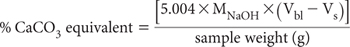

The amount of acidity able to be leached to the environment from ASS may be diminished or even reduced to negligible levels should the soil contain alkaline compounds such as carbonates, soluble silicates and/or hydroxides. Coarse shell material in the soil usually has little effective neutralising capacity in situ due to its small surface area to volume ratio. Accordingly, pre-existing coarse shell material should not be crushed into fine particles during sample preparation for this and similar ASS methods.
Methods employed in estimating acid neutralising capacity (ANC) fall into three categories:
(a) Direct measurement – soil digestion with added acid and back titration of un-reacted acid;
(b) Indirect, via measurement of carbonate – such as Loss on Ignition by Method 6G1. (Assumes all ANC is due to inorganic C), and
(c) Determination of alkaline-earth cations (Ca2+ and Mg2+), as in SPOCAS – assumes all ANC is due to Ca and Mg compounds.
Rapid titration Method 19A1 is not particularly suitable for use on ASS. It uses 1 M HCl, which can sometimes yield an inflated ANC result, leading to an underestimate of potential environmental risk. In contrast, Method 20H1 uses 0.1 M HCl and is applicable to the determination of the neutralising capacity of ASS. It involves heating a known weight of soil sample in a known volume of 0.1 M HCl, followed by back titration of any unused acid to pH 7.0 with standardised 0.25 M NaOH.
Should a more accurate result be required on a low analysis sample (or on samples suspected of being low because the pHKCl-ASS is close to 6.5) a lower molarity NaOH solution may be used (Ahern et al. 2004c), but the increased accuracy thus achieved must be balanced against the risk of atmospheric CO2 contamination.
Standard ≈0.25 M Sodium Hydroxide
Prepare and standardise with dry potassium hydrogen phthalate (KHC8H4O4) as for Method 20B1. This standardisation should be carried out every two to three days. A concentration other than 0.25 M can be used if preferred.
Standard 0.1 M Hydrochloric Acid
Prepare from a commercially purchased HCl standard solution. Alternatively add 10 mL of 31.5–33% w/v (or equivalent) HCl to ≈100 mL of deionised water, mix well, cool to room temperature, then make to 1.0 L with deionised water. Standardise against pre-standardised NaOH or by using sodium tetraborate (Na2B4O7.10H2O), as guided by Method 7A1.
pH buffers
Obtain commercially or prepare as described in Method 4A1. These should cover the range from around pH 4.0–9.2.
Calcium Carbonate
Dry calcium carbonate (CaCO3, Primary Standard grade) by heating at 110°C to constant weight and store in a desiccator prior to use.
Weigh ≈1.0 g (to three decimal places) of finely ground soil (<0.5 mm, previously dried rapidly at 85°C, excluding visible shell) into 250 mL conical beakers. Add 25 mL of deionised water and 25 mL of standard 0.1 M HCl, and cover with a watch glass (see Notes 1 and 2). Place all beakers on a hot plate and boil gently for 2 min. Cool to room temperature, before titrating the unused acid in the beakers with pre-standardised 0.25 M NaOH to pH 7.0. Record the volume of NaOH titrant for each sample (Vs). Also titrate a blank solution (Vbl). Vbl will be close to 10 mL if acid and alkali are 0.10 M and 0.25 M, respectively.
Provided samples and blank are treated the same, the volume and strength of HCl do not feature in the calculation of ANCBT.
Calculate the % CaCO3 equivalent of the sample as:

where MNaOH = actual molarity of the NaOH.
Report ANCBT (%CaCO3 equivalent) on an oven-dry (85°C) basis.
1. Prepare at least one blank for each batch of samples.
2. In each run, include an accuracy check which involves a CaCO3 reference. Weigh 0.1 g of pure CaCO3 (accuracy of 0.0001 g). This should react with 20 mL of the 25 mL of 0.10 M HCl. Recovery of AR CaCO3 should be 100 ± 1%.